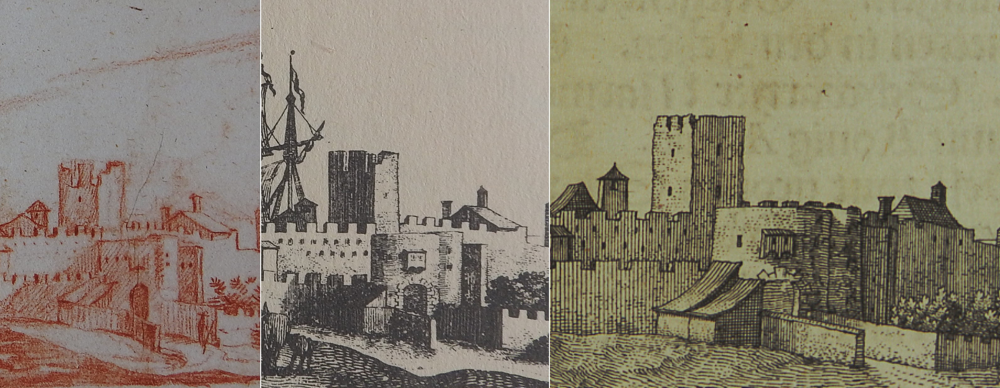
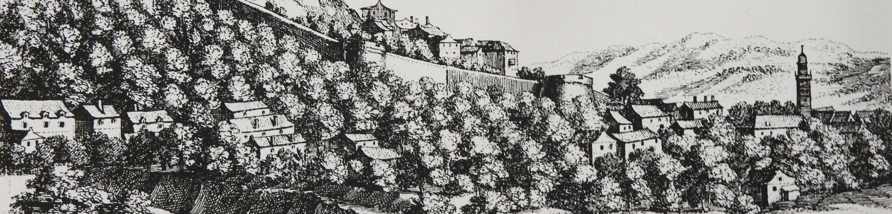
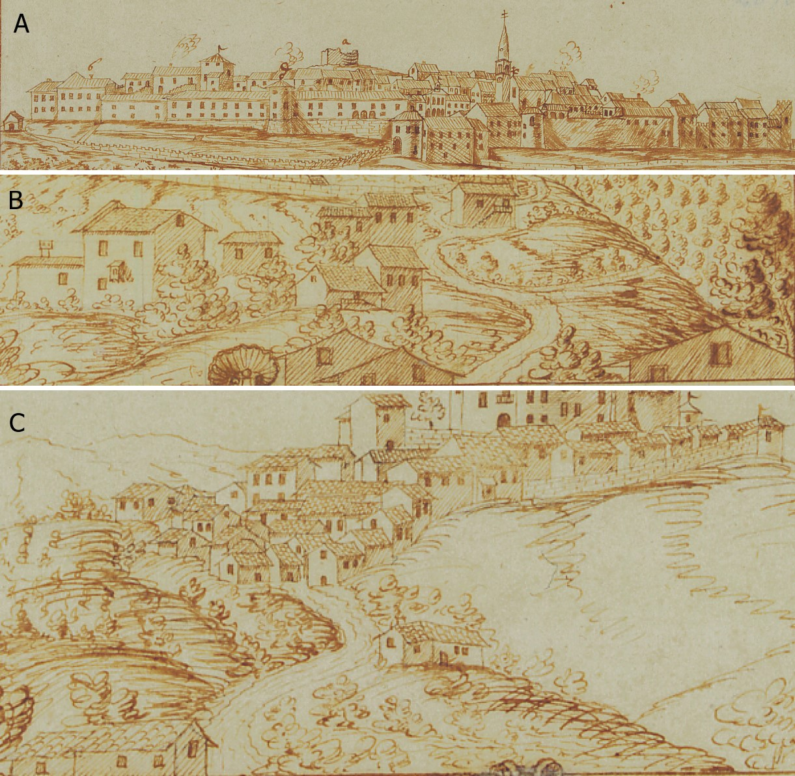
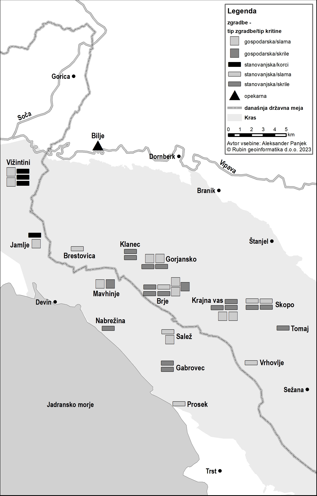
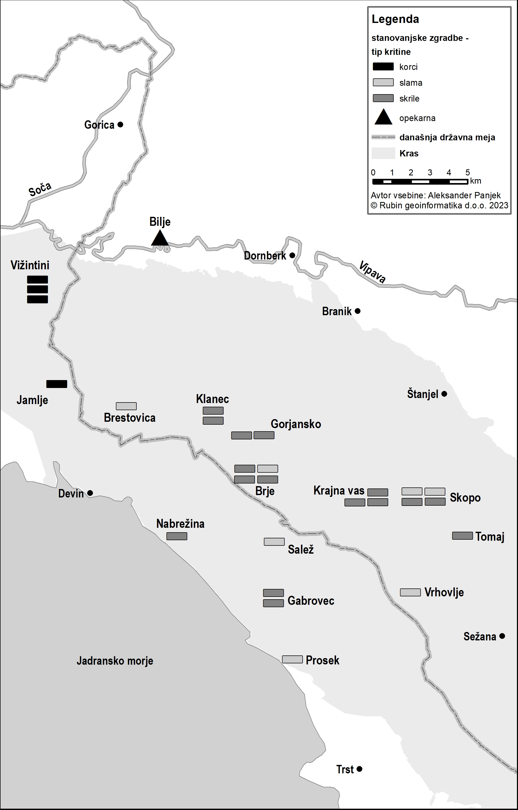

1Prispevek obravnava v različnih strokah dolgoživo vprašanje o materialu, iz katerega so bile izdelane strešne kritine na kmečkih poslopjih na Krasu, in o času prevlade ter zamenjave slame, skril in korcev med 16. in 19. stoletjem. V uvodnem delu povzema in prikaže interpretativno in kronološko ohlapnost obstoječe literature. V nadaljevanju se opre na pisna pričevanja in likovne upodobitve mest in vasi na Primorskem iz zgodnjega novega veka ter pokaže njihovo delno neskladje z obstoječimi interpretacijami in dvoumnost upodobitev. V osrednjem delu so prikazani in analizirani izvirni arhivski podatki, povzeti iz nepremičninskih transakcij med kmeti, ki vsebujejo informacije o vrsti in vrednosti strešnih kritin na sedemindvajsetih stanovanjskih in trinajstih gospodarskih poslopjih v petnajstih krajih na Krasu sredi 18. stoletja. Večina teh hiš je bila prekrita s skrilami, večina gospodarskih poslopij pa s slamo. Izjemo predstavlja prevlada korcev na goriško-vipavskem koncu. S tem je podana zanesljiva časovna opora za nadaljnje raziskave.
2Ključne besede: kmečka arhitektura, življenjski standard, Primorska
1The contribution addresses the long-standing question of the roof covering materials for rural buildings in the Karst region and the chronology of the prevalence and replacement of straw, slates, and bent tiles from the 16th to the 19th century. The article first outlines the interpretative and chronological uncertainty of the existing literature. Next, it presents the early modern written testimonies and iconography of towns and villages in the Slovenian Littoral, demonstrating their partial discrepancy with the existing interpretations and the ambiguity of the relevant depictions. The central part of the article analyses the original archival data from real estate transactions between peasants, which contain information on the type and value of roof coverings on 27 residential and 13 outbuildings in 15 localities in the Karst region in the middle of the 18th century. Most of these houses were covered with slates, while most outbuildings were thatched, except for the Goriška-Vipava area, where bent tiles prevailed. These results provide a reliable timeline foundation for further research.
2Keywords: rural architecture, standard of living, the Slovenian Littoral
1Znanstvena literatura različnih strok kraško hišo obravnava že več desetletij, pri čemer smo zgodovinarji doslej ostali bolj v senci tako slovenskih kot italijanskih geografov, etnologov, arhitektov, umetnostnih zgodovinarjev in drugih strokovnjakov. Pomemben mejnik na to temo predstavljata prispevka Marie Paole Pagnini iz leta 1966 in Ivana Sedeja iz leta 1969. Pagnini je na podlagi dotlej obstoječe literature (Murko, Dvorsky, Cvijić, Biasutti, Cumin, Melik in Nice) ter lastne terenske raziskave identificirala tri zaporedne razvojne faze hiše na Krasu. Po njenem mnenju je bila najstarejša oblika kamnite hiše na Krasu pritlična in pravokotnega tlorisa z dvokapno streho, ki je bila najprej prekrita s slamo in kasneje s kamnitimi skrilami. V naslednji fazi so hiše dobile nadstropje. V najnovejši fazi tradicionalne arhitekture so z uvedbo korčne kritine hiše dobile še pohodno podstrešje. Za razliko od skril, katerih teža zahteva strmo streho, so korci lažji in omogočajo manjši naklon ostrešja, zaradi česar je bilo mogoče dvigniti obodne nosilne zidove, tako da je podstrešje pridobilo na višini in uporabnosti.1
2Sedej je bil precej drugačnega mnenja. Po njegovem »slovenska kmečka hiša na Krasu in v Primorju nasploh ne izvira iz kake prazgodovinske enocelične bunje, marveč ima vzor v visoko razviti stanovanjski arhitekturi staroselskih mest in vasi«. Na terenu je identificiral obstoj enonadstropnih stavb že v srednjem veku (Štanjel) in v prvi polovici 16. stoletja (Šmarje pri Sežani) ter zagovarjal tezo, da hiše na podeželju sledijo istim stilskim načelom kot mestne in plemiške, razlikujejo pa se po tem, da domačija ni prostorsko utesnjena, ima poudarjeno gospodarsko (kmetijsko) funkcijo in njeni naročniki so praviloma finančno manj močni, zato so tudi hiše skromnejše. Kraška hiša se s časom ne razvija toliko v višino kolikor v dolžino oziroma širino, saj gre za primer adicijske gradnje, pri kateri se v skladu s spreminjajočimi se potrebami lahko nove stavbe dodajajo ob obstoječe. »Izredna kompozicijska prožnost in komponibilnost kraške hiše pa ima za posledico slikovite in plastično izredno zanimive rešitve. Kraška domačija je organizem, ki je le redko sklenjen.« Ker so pri vsakem elementu v nizu zunanji zidovi nosilni, ima vsaka stavba svoj vhod v pritličju in v nadstropju, zaradi česar imata zunanje stopnišče in balkon (gank) neobhodno funkcijo povezave posameznih prostorov. Iz strukturnega vidika je Sedej identificiral dve spremembi skozi čas. »Šele v 18. in zlasti v 19. stoletju« se že v fazi gradnje uveljavi »mnogocelična zasnova«, pri kateri so »zidovi posameznih celic hkrati tudi nosilne stene in ne le predelni provizoriji iz šibja in blata«, kar omogoči pojav pročelij »z mnogimi okni, ki se nizajo v pravilnih oseh in višinah« in so povezani »z enotnim gankom – zunanjim hodnikom«. Druga sprememba je pomembnejša za temo tega prispevka. »Stavbne gmote so bile v času dobrih petih ali celo več stoletij konstanta, ki se je deloma spremenila v 17. in 18., predvsem pa v 19. stoletju z vpeljavo kritine iz korcev. Prej je prevladovala strma streha iz skrli pa tudi slame. Prav zato je bil videz teh hiš pred 19. stoletjem manj 'mediteranski', bolj prvinski in surov.« Kraške hiše so po Sedeju imele tršate kamnite strehe, »ki jih je Stele posrečeno imenoval 'prastrehe'« .2 Zatem je k dokazom o zgodnjih primerih nadstropnih hiš dodal stavbno jedro domačije v Koprivi na Krasu, o čemer »je pričala letnica na kamnu nad ognjiščem – leta 1604«.3
3Dve desetletji kasneje je Sedej, vedno na podlagi opazovanj stavb na terenu, dodal nekaj zanimivih interpretacij s krajinskega vidika, ki bi nas malenkost odvrnile s poti, ter nekoliko izostril kronologijo strešnih kritin. Na eni strani, čeprav so jo uporabljali že v prazgodovini in navkljub njenemu »arhaičnemu« videzu, kamnita kritina »pripada vsem slojem«, saj ima »na Krasu in v Istri tudi renesančni in celo baročni značaj – navsezadnje so s skrlami pokrite gotske cerkve, renesančne graščine in baročne kmečke hiše«. Z vidika kronologije je njegova izhodiščna teza ta, da so na Krasu »dolga stoletja živele v simbiozi kamnite, korčaste in slamnate strehe – vendar so začeli slamo na veliko opuščati že v 19. stoletju«. V 16. in 17. stoletju »so dajale ton krajinski sliki strme dvokapne kamnite in ob njih slamnate strehe«, ki pa so nastajale še v 18. in 19. stoletju, tako da sta verjetno »slama in kamnita kritina prevladovali prav do 18. stoletja.«4 A hkrati s hipotezo o dolgi prevladi skrilnatih in slamnatih streh Sedej zagovarja tudi zgodnje pojavljanje korčnih kritin in iz njegovih besed je mogoče razumeti, da so se širile razmeroma hitro.
»Na Krasu in marsikje na Primorskem (predvsem v Istri) so se začeli uveljavljati korci že sorazmerno zgodaj, vsaj v 16. stoletju. Najprej seveda v mestih, na cerkvah in na graščinah – čeravno tudi v višjih družbenih sferah niso pozabili na kamnite plošče še v 19. stoletju. Kritina se je razširila iz mestnih središč – predvsem iz Kopra in Trsta in je hitro pokazala svoje prednosti. Gre za strešno kritino, ki potrebuje malce lažji strešni stol, lahko jo je obnavljati pa tudi izredno dobro se obnese ob burji, posebej če je streha, kot v Vipavski dolini, obtežena s kamni.«5
4V bistvu gre pri Sedeju za vsaj na videz nekoliko protislovno interpretacijo, ki na eni strani zagovarja čim zgodnejši pojav korcev na podeželskih in kmečkih strehah in na drugi sobiva z verjetno prevlado skril in slame do vključno 18. stoletja. Kot žarišči širjenja korcev na podeželje pa vidi mesti Koper in Trst.
5Odtlej so kraška hiša in nasploh arhitektura ter obrt in umetnost obdelovanja kamna pritegnili precejšen strokovni interes. Po arhitekturni tipologiji so kraško hišo definirali kot »kraško-sredozemski« tip, v katerem so opazne sorodnosti s furlansko ruralno arhitekturo, ali naravnost kot »kraško arhitekturo«, ki se je izoblikovala na stičišču med kranjskimi stilskimi vplivi in tistimi iz beneškega primorja. Za kraško kamnito arhitekturo je med drugim značilen vtis zlitosti s krajino.6 Peter Fister se je glede razvoja hiš na Krasu postavil nekako na pol poti med obe zgoraj omenjeni rekonstrukciji (Pagnini in Sedej). »Srednjeveško stavbarstvo se na Krasu ni začelo nanovo« in zlasti »male vaške cerkvice« so ohranjale značilnosti, »ki so jih dvigovale iz anonimnosti. Portale, okenske okvire, klesane konzole ipd. so (še vedno) izdelovali kot kvalitetne izdelke iz domačega, kraškega kamna in tako ohranjali znanje preteklih rodov kamnarjev in kamnosekov«. Po Fistrovem mnenju so bile stavbe na Krasu v srednjem veku »majhne, enocelične« ter so »prvotno […] stale ločeno in jih je v 'ulične' nize povezalo šele 18. in 19. stoletje«.7 Med srednjim vekom in 18. stoletjem sta pretekli vsaj dve stoletji. Ljubo Lah je za zelo verjetne označil »domneve, da je povprečna kmečka hiša na Krasu že pred nekaj stoletji bila etažna stavba, ki je pod skupno streho združevala […] 'hišo' kot osrednji bivalni del, štalo, v nadstropju morda skedenj in kakšno mračno sobico«. Čas ostaja torej neopredeljen. Sicer je Lah gradil na konceptu adicijske gradnje in predstavil kompleksnejšo sliko razvoja od posamezne hiše do členjenega niza stavb okoli dvorišča.8 Če naj potegnemo kak sklep, je ta, da ni pravega soglasja niti gotovosti o tem, kdaj so se v kmečki arhitekturi na Krasu pojavile etažne stavbe. Več je strinjanja o konceptu adicijske gradnje kot sistema gradnje ter o tem, da so se daljši obulični nizi stavb in velike domačije pojavili z 18. stoletjem. Da pa ni mogoče govoriti o pomanjkanju znanja v gradbeništvu med krajani kraških vasi v stoletjih novega veka, je prepričljivo dokazal zlasti Božidar Premrl, kar seveda ne izključuje sodelovanja zunanjih mojstrov.9
1Splošno znano dejstvo je, da so v preteklosti na Krasu soobstajale tri vrste kritin, ki smo jih že omenili, to so slama, kamnite skrile in opečnati korci. Večje vprašanje predstavlja kronologija, to je umestitev soobstoja in zaporedja oblik v natančnejša časovna obdobja. Sedejevo kronologijo, da je vpeljava kritine iz korcev pojav 17. in 18., predvsem pa 19. stoletja ter da je pred tem prevladovala skrilnata streha, »pa tudi iz slame«, smo že videli. Po Fistrovem mnenju so bile v srednjem veku »strehe pretežno krite s kamnitimi ploščami ali slamo, bile so strme«. Spremembo je prinesel šele »čas baroka«, ko so »dotedanje s kamnitimi ploščami in slamo prekrite strehe začeli pospešeno nadomeščati z enovito opečno kritino – s kraškimi korci, prvotno položenimi na opečne plošče z značilno belo obarvanimi vogali«. Na Krasu naj bi do te spremembe prišlo po Valvasorju, ker ta omenja le kamnite in slamnate kritine.10 S tem Fister pojav korcev na kraških hišah v bistvu datira v 18. stoletje. Obenem srečamo mnenje, da so vse tri oblike obstajale hkrati in da ne bo držalo, da je klasična oblika kraške strehe samo kamnita, temveč so bile strehe pokrite tudi s kopi (korci) in slamo, vendar brez opredelitve obdobja.11 Po drugi strani imamo mnenje, da se je kritina »spreminjala od slamnate in skrilnate do korčaste«, z natančnejšo časovno opredelitvijo, po kateri so se »prve korčaste strehe […] pojavile že v 17. stoletju«, vendar brez navedbe vira. Naško Križnar navaja tudi, da je bil »zgodovinar Simon Rutar mnenja, da so se korci pojavili precej bolj zgodaj«.12 Lah piše, da so bila naselja na Krasu v 16. in 17. stoletju »razpoznavna predvsem po strmih, dvokapnih, kamnitih strehah, med katerimi je bilo tudi veliko slamnatih«. Meni, da je opečnata kritina s korci pomenila »pravo razvojno revolucijo« in naj bi se začela »uveljavljati že sorazmerno zgodaj, vsaj v 16. stoletju«, čeprav najprej v mestih, na cerkvah in gradovih, nato pa se je »razširila iz mestnih središč – predvsem iz obalnih mest«. K doslej znanemu je dodal zanimivo ugotovitev, da je za izdelavo strehe iz korcev potrebnega manj lesa za tramove kot v primeru skril, ker so te težje.13
| Avtor | Čas |
| Sedej (1969) | 17., 18. in predvsem 19. stol. |
| Sedej (1989) | vsaj 16. stol. (najprej mesta, cerkve in graščine) |
| Fister | 18. stol. |
| Križnar | 17. stol. |
| Lah | 16. stol. (cerkve in gradovi) |
| Premrl | konec 18. stoletja |
2Zaključki avtorjev, ki so se preizkusili v oblikovanju kronološkega orisa pojavnosti različnih strešnih kritin na Krasu, se med seboj ne skladajo, časovni razpon med njimi je širok tri stoletja in več (tabela 1). Izhodiščna ugotovitev je, da obstoječe znanje sloni na strokovnem opazovanju in analizi ohranjenih objektov, sklepanja in interpretacije starejših strokovnjakov pa se prenašajo iz roda v rod avtorjev, ki jih povzemajo in redkeje nadgrajujejo. Skupna značilnost večine obstoječe literature na temo strešnih kritin na Krasu je hkrati ta, da ne sloni na uporabi pisnih virov.
3Izjema je vsaj Premrl, čigar poskus časovne umestitve strešnih kritin na Krasu je privedel do precej drugačnega rezultata, saj je »zlato dobo« skrilnate strehe postavil v 18. stoletje. »Največ skrilnatih streh« je po njegovem mnenju »nastalo v 17. in 18. stoletju«. V 17. stoletju je evidentiral, da je večina cerkva imela skrilnato streho, medtem ko naj bi v 18. stoletju »naraščal predvsem delež stanovanjskih in gospodarskih stavb« s to kritino, čeprav naj bi tedaj bile »številnejše sočasne slamnate strehe«. Tudi Premrl zagovarja stališče, da so kamnite kritine obstajale ne le ob slamnatih, temveč tudi ob opečnatih, in sicer »v širšem stavbnem tkivu vaških naselij kot v sklopu ene domačije ali celo na istem objektu«. Na podlagi odsotnosti omembe opečnatih kritin v Terezijanskem katastru iz srede 18. stoletja in njihove prisotnosti v Franciscejskem iz dvajsetih let 19. stoletja sklepa, »da se je korčna kritina, ki se je že prej v večji meri uporabljala na Vipavskem, v Furlaniji in v Trstu, začela postopoma uveljavljati in širiti tudi po Krasu nekako ob koncu 18. stoletja«.14 Avtor soglaša tudi z uveljavljenim zaporedjem slama, skrile, korci. »Slama je bila, zgodovinsko gledano, najstarejša in bila je še dolgo daleč najbolj razširjena. Postopoma je odstopala mesto skrilnati kritini, vendar je še dolgo sobivala z njo. Mlajša opečna kritina, ki so jo izdelovali v opekarnah na obrobju Krasa, na primer v Vipavski dolini in Furlaniji, je postopoma nadomeščala slamnato kritino in je začela konkurirati skrilnati kritini.«15
1Zaporedje slama, skrile, korci sem usvojil tudi sam v nekaterih svojih delih.16 Za naš namen je mogoče navesti še nekaj pričevanj sodobnikov v pisni in likovni obliki. V drugi polovici 17. stoletja je Valvasor zapisal, da »imajo [Kraševci] velike vasi in večinoma zidane hiše, nekatere strehe na njih so pokrite s ploščatimi kamni.«17 Stoletje kasneje je vodja policije v Trstu Pittoni (1786) beležil, da so na območju tržaške občine »skoraj vsi kmečki domovi grajeni s suhim zidom: kvaliteta in oblika kamnov delata zidove trdne in prebivalci naselij jih znajo oblikovati s posebno umetnostjo«. V preteklosti so bile po njegovem skoraj vse strehe slamnate, medtem ko so bile tedaj zaradi širjenja »nekaj malega bogastva« na podeželje hiše po vaseh in zlasti v predmestnih naseljih že »skoraj vse prekrite s skrilami ali korci«. »V predmestnih naseljih, zlasti v Škednju, Križu in na Proseku [slednja se nahajata na Krasu], lahko opazimo številne zidane hiše, ki se zdijo prej gosposke kot kmečke.« Pittonijevo poročilo proti koncu 18. stoletja izrecno omenja lokalno kamnoseško in zidarsko znanje ter prekrivanje streh skoraj izključno s skrilami in korci, medtem ko naj bi v preteklosti bilo obratno, saj naj bi močno prevladovale slamnate kritine.18 To se sklada z Valvasorjem, po katerem so sto let poprej le »nekatere strehe« imele kamnito kritino, in hkrati s Premrlovo okvirno kronologijo.
2Lahko si poskusimo pomagati z likovnimi viri. Na barvni risbi Doberdoba in presihajočega jezera z bližnjimi naselji v Dolu (Valon) ob cesti med Gorico in Štivanom, ki jo je z nekaj dvomov mogoče datirati v 16. stoletje, imajo vse hiše redeče obarvano streho, kakor tudi cerkve in goriški ter devinski grad, kar bi lahko razumeli kot korčno kritino. Na barvni upodobitvi obmejnega naselja Štivan pri Devinu iz leta 1651 so vse strehe ravno tako rdeče obarvane, a so v tem primeru podobno obarvani tudi zidovi stavb in pol mejnega mostu, s čimer je beneški avtor poudaril pripadnost habsburški strani.19 Nekaj desetletij poznejše Valvasorjeve upodobitve niso povsem jasne in se v nekaterih primerih ne skladajo z različnimi verzijami, nastalimi med začetnimi skicami (1678–1679) in tistimi, objavljenimi v Slavi vojvodine Kranjske (1689). V primeru vasi Škocjan tako skica kot bakrorez kljub razlikam v upodobitvi kažeta strme strehe, ki bi jih bilo mogoče razumeti kot skrilnate, ker so strme in so na hišah enake kot na cerkvi. V Devinu je za grajskim obzidjem videti le dve strehi naselja, in sicer cerkveno z zvonikom in streho ene od hiš. V tem primeru imamo kar tri različne upodobitve iz Valvasorjevih del: skico, prvo objavljeno verzijo iz topografije (1679) in tisto iz Slave. Na skici je edina hišna streha položna in ima vitek visok dimnik, kar kaže na opečnato kritino. V topografiji je podobna, le nekoliko manj položna in dimnik je odebeljen, medtem ko je v Slavi streha iste hiše strma, da izgleda skrilnata, dimnik pa je kratek in čokat (iste razlike je videti na strehi cerkve; slika 1). V Senožečah je manj razlik med verzijami, so pa na vseh treh upodobitvah poleg strmejših dvokapnic prikazane tudi položnejše in štirikapne strehe, tako da bi lahko sklepali na soobstoj skrilnatih, opečnatih in nenazadnje slamnatih streh. V Trstu so v Slavi strehe večinoma položne, a na Reki so strmejše.20 Slednje se ne sklada s stoletje mlajšo podobo Reke, kakor jo je narisal Clobucciarich (1579), saj so na njej vse strehe rdeče obarvane in položnejše.21 Navedena neskladja napeljujejo k opreznosti pri sklepanju na podlagi tovrstnega likovnega gradiva, saj nam očitno ne more dati nedvoumnih informacij, temveč namige možnega, ki jih je koristno dopolniti s pisnimi viri.

Vir: Valvasor, Topografija – Skicna knjiga. Valvasor, Topographia ducatus Carnoiolae. Valvasor, Die Ehre3Nenazadnje ravno pisni viri, ki jih navajamo v nadaljevanju, oporekajo korcem v mestih ob jadranski obali v 16. stoletju. Dva opisa hiš v istrskih mestih umeščata postopno uveljavljanje korčne kritine v prvo polovico 17. stoletja in hkrati poudarjata šibko proizvodnjo tovrstnega gradbenega materiala. Ob nastopu škofovske službe v Kopru leta 1653 je o tem mestu Bonifacio zabeležil, kako »strešnikov, korcev, opek in apna [verjetno je mišljena apnena malta, op. A. P.] tod ne izdelujejo; vse to prihaja iz Pirana v majhnih količinah, ne posebno kakovostno, za nameček pa še drago. Vse hiše so zato grajene iz velikih blokov peščenjaka, grobo klesanih z velikim dletom«.22 Drug škof, Tommasini iz Novigrada, ki je preminul leta 1654, je opisal Istro v času pred sredino 17. stoletja. Glede urbanih naselij, pri čemer je izrecno omenil Trst, Koper, Piran, Rovinj, Vodnjan, Motovun in Buje, je navedel sledeče:
»Ker nimajo veliko žganega kamna, namesto tega uporabljajo surovega in vsak kamen, ki ga izkopljejo iz zemlje […], zato delajo zelo debele zidove. Samo v Piranu in v Kopru so dve ali tri peči za korce, planete, opečne plošče in apneno malto [tavelle, quadrelli e calcina …] in nad kritinami so nedolgo nazaj uvedli korce iz žgane gline, ki so jih prej izdelovali iz plošč živega kamna, na tanko lomljenih v nekaterih krajih, in te je videti na vseh starinskih hišah in tudi cerkve so prekrite s temi kamnitimi strešniki.«23
4Ob tem je lahko zanimivo navesti, kako je Ljubljana v 16. stoletju premogla mestne opekarne, v katerih so poleg opek raznih oblik izdelovali tudi strešnike, ki so bili ploščate oblike in zaokroženi na spodnji stranici, torej opečnate bobrovce (Dach Ziegel in Halben Dach Ziegl). V 18. stoletju sta delovali dve mestni opekarni, ki sta v obdobju 1736–1766 v povprečju letno izdelovali okoli 300.000 zidakov in 90.000 strešnikov, proti koncu stoletja pa so se jima pridružile še zasebne. 24
5Če se vrnemo na Kras, je na tlorisu Devina, nastalem kmalu po potresu leta 1690, v naselju mogoče našteti 21 običajnih stavb ter cerkev, samostan in stolp. Pripisi na sami risbi pri le sedmih stanovanjskih in gospodarskih poslopjih (tretjini) navajajo slamnato kritino: izmed teh so štiri opredeljene kot hlevi, še dve drugi sta verjetno bili gospodarski poslopji. Pri ostalih ni navedbe kritine, kar očitno pomeni, da ni bila slamnata. Mogoče je sklepati, da so bile leta 1690 stanovanjske hiše v Devinu večinoma prekrite s kamnito ali korčno streho, na kar nakazujejo že omenjene Valvasorjeve upodobitve, gospodarska poslopja in hlevi pa s slamo.25

Hrani: Biblioteca Civica di Gorizia6Manj dvoumnosti srečamo med upodobitvami streh v Gorici. Kasper Merian je sredi 17. stoletja (okoli 1649 ali 1650) tako na mestnih hišah na grajskem griču znotraj obzidja kot na tistih pod njim skoraj vse strehe narisal kot položne dvokapnice (čeprav sta dve do tri tudi bolj strmo zarisani), pri čemer ima ena stavba celo frčade (skrajno levo na sliki 2). 26 Zelo malo dvomov poraja razbiranje risb o prizorih iz tedaj polpretekle zgodovine in kronike mesta Gorice, ki jih je proti koncu življenja (v prvih letih 18. stoletja) izdelal rojeni Goričan Giovanni Maria Marusig. Strehe tako verskih kot posvetnih mestnih stavb so upodobljene z razločnimi obrisi korcev in so rdeče akvarelno obarvane, kar velja zlasti za njegovo delo o goriških cerkvah, samostanih, šolah in drugih pomembnejših stavbah (1706). Zanesljivo delujejo tudi Capellarisove upodobitve Štanjela, Branika in Tabora nad Dornberkom iz leta 1752 (slika 3). V Štanjelu je videti večinoma strme (skrilnate) strehe, medtem ko jih je v Braniku in Taboru nad Dornberkom narisal položne in so na njih razvidni obrisi korcev. Za vipavski prostor je Valvasorjeve in Capellarisove upodobitve (1678–1679 in 1752) že primerjala Ledinek Lozej in ugotovila, da je na novejših risbah »naklon nekaterih streh položnejši, v Gradišču [ob Soči] so celo štirikapnice, najverjetneje krite s korci, druge ostajajo strme in krite s škrlami«, čeprav so pri Valvasorju kraji v zgornji, pri Capellarisu pa v spodnji Vipavski dolini.27

Hrani: Musei Provinciali di Gorizia7Na podlagi doslej navedenega je mogoče izluščiti nekaj ugotovitev. Obstoječa literatura ne soglaša ne glede časa, kdaj sta se skrilnata in korčna kritina pojavili v kmečki arhitekturi na Krasu, ne glede obdobja in hitrosti medsebojnega izpodrivanja in niti glede smeri, od koder naj bi se uporaba korcev širila na Kras. Lah njihovo žarišče vidi v obmorskih mestih, Premrl pa na Vipavskem in v Furlaniji.
8Na osnovi navedenih pisnih in likovnih pričevanj je mogoče skleniti sledeče. Na eni strani se potrjuje vtis, da je številčnost neslamnatih kritin na Krasu v 17. v 18. stoletju naraščala. Na drugi pa je videti, da je vsaj v naseljih središčnega pomena na obrobju Krasa (Štanjel, Senožeče, Branik, Tabor Dornberk) mogoče locirati zgodnejšo prevlado skrilnatih ali opečnatih streh, in sicer v drugi polovici 17. stoletja ali najkasneje do njegovega konca, zagotovo pa sredi 18. stoletja. Propulzivna vloga obalnih mest pri širjenju korčne kritine na podeželje vsaj v prvi polovici in do sredine 17. stoletja ne deluje prepričljivo, posebej ne z vidika proizvodnje in ponudbe materiala. Za Trst, Koper in Piran je namreč mogoče sklepati, da se je v prvi polovici 17. stoletja šele pričel proces uvajanja korčnih kritin na novogradnjah in ob prenovah. Starejši stavbni fond, tako posvetni kot cerkveni, je še sredi 17. stoletja bil prekrit s kamnitimi skrilami. Drugačne razmere nam daje slutiti gradivo o Gorici, kjer so mestne stavbe v drugi polovici 17. stoletja in zanesljivo v prvih letih 18. prekrite s korci. Splošnejša ugotovitev pa je, da nam primanjkuje zadovoljivega števila zanesljivih virov, ker tematika enostavno še ni dovolj raziskana (tabela 2).
| Leto (vir) | Slama | Skrile | Korci |
| 16. stoletje (risba Doberdoba) | Doberdob in okolica (?) | ||
| 1579 (Clobucciarich) | Reka (rdeče strehe – ?) | ||
| 1649–1650 (Merian) | Gorica | ||
| 1651 (beneška risba) | Štivan (rdeče strehe – ?) | ||
| Pred 1654 (Tommasini) | istrska mesta, starejše stavbe | istrska mesta, novejše stavbe in kritine | |
| 1653 (Bonifacio) | Koper, dostopni v manjših količinah | ||
| 1678–1679 (Valvasor slike) | ? | Škocjan, Senožeče, Devin (?), Trst (?) | Senožeče, Devin (?), Trst (?) |
| 1689 (Valvasor, pisno) | Večina na Krasu | manjšina na Krasu | |
| 1706 (Marusig) | Gorica | ||
| 1690 (risba) | Devin (gospodarska poslopja) | Devin (stanovanjske stavbe?) | Devin (stanovanjske stavbe?) |
| 1752 (Capellaris) | Štanjel | Branik, Tabor Dornberk | |
| 1786 (Pittoni) | Manjšina (Trst – okolica in Kras) | večina | večina |
1V arhivu devinskega gospostva in glavarstva je ohranjenih več sto zapisov iz sredine 18. stoletja o kupoprodajah, dedovanjih in drugih transakcijah kmečkih nepremičnin.28 Med temi je najti tudi stavbe in v 40 primerih zapisi navajajo njihovo strešno kritino. Primeri so iz obdobja med letoma 1748 in 1756 in pokrivajo dober del takratnega devinskega gospostva, saj zajemajo prostor med črtama Tomaj–Komen–Vižintini v Dolu v notranjosti ter Prosek–Nabrežina–Jamlje v bližini morske obale. Zastopanih je skupaj petnajst vasi. Opozoriti velja, da podatki ne predstavljajo nikakršnega statističnega vzorca, ki bi bil zanesljivo reprezentativen, saj je njihov nabor plod naključja, po katerem so se ravno te stavbe znašle v nepremičninski transakciji v času, za katerega so se dokumenti ohranili. Poleg tega informacije ne pokrivajo vsega Krasa in tudi ne vseh vasi v gospostvi ali na zajetem območju, pri čemer so nekatere vasi zastopane z več primeri, druge pa samo s po enim. Kljub temu je prednost podatkov v tem, da kot stranke v transakcijah nastopajo pripadniki revnejših in premožnejših kmetov, s tem pa tudi stavbe različne kakovosti, čeprav razmerja v realnosti ne poznamo.
2Ne glede na povedano, skupek 40 primerov za to obdobje in sklenjeno območje ni ravno zanemarljiv in ima to prednost, da nudi neko sinhrono sliko stanja v točno določenem času slabega desetletja (1748–1756). Za vseh 40 zajetih poslopij razpolagamo s podatki o kraju, kjer so se nahajali, o njihovi stanovanjski ali gospodarski namembnosti ter o kritini (slama, skrile, korci). V večini primerov vir navaja tudi ocenjeno vrednost strehe, vendar je le za nekatere izmed njih navedena tudi površina kritine, kar je pogoj za izračun vrednosti po merski enoti in s tem za zanesljivejšo opredelitev razlike v vrednosti med oblikami kritine.
3Pri večini stanovanjskih stavb v našem naboru (skupaj 27) je bila strešna kritina skrilnata (59 %), sledile so slamnate (26 %) in korčne strehe (15 %). Pri gospodarskih poslopjih (skupaj trinajst) je slika povsem obratna, saj jih je bila ogromna večina prekritih s slamo (85 %). To so bili hlevi in ena pritlična lopa. Le dve sta imeli skrilnato kritino in sta predstavljali izjemo tudi glede namembnosti, saj je šlo za klet s skednjem (v Brjah) in klet s podstrešjem.
4Ker so bile strehe stavb za gospodarske namene in posebej hlevov skoraj vse prekrite s slamo, je zastopanost različnih vrst kritin v prostoru smotrna samo za poslopja za stanovanjsko rabo. V ta namen smo obravnavani prostor razdelili na štiri območja, in sicer: južno notranje oz. tomajsko območje (vasi ali župe Tomaj, Skopo, Vrhovlje, Krajna vas), severno notranje oz. komensko območje (Brestovica, Brje, Gorjansko, Klanec), priobalno oz. nabrežinsko območje (Gabrovec, Mavhinje, Nabrežina, Prosek, Salež) ter območje Dola ob prometnici med obalo v Štivanu in goriško-vipavsko ravnico (Jamlje, Vižintini). Stanovanjske hiše s skrilnato kritino najbolj prevladujejo na komenskem (v sedmih od devetih primerov), a tudi na tomajskem (v šestih od devetih primerov) in na nabrežinskem območju (v štirih od šestih primerov) ni bilo bistveno drugače. V vseh primerih so preostale hiše imele slamnato kritino, takih je bila torej četrtina do tretjina. Iz te slike izstopa samo območje Dola ob cesti proti Gorici, kjer so bile vse štiri zabeležene hiše prekrite s korci.
5Iz našega vzorca 27 stanovanjskih stavb se tako izriše slika Krasa sredi 18. stoletja, v kateri prevladujejo hiše s skrilnato kritino, z izjemo območja Dola, kjer so bile kritine korčne. Tudi če izvzamemo to območje, je bilo drugod hiš s slamnato streho le 30 odstotkov. Sklenemo lahko, da je prevladujoči vzorec takrat bil hiša s skrilnato streho in hlev s slamnato. Strehe s korci so bile značilne za goriški konec (tabela 3).
| Območje | Vas | Stanovanjska stavba | Strešna kritina | ||
| Korci | Skrile | Slama | |||
| Tomajsko območje | Krajna vas | hiša s podstrešjem in kletjo | 1 | ||
| kuhinja | 1 | ||||
| kuhinja | 1 | ||||
| Skopo | hiša | 1 | |||
| hiša | 1 | ||||
| hišica | 1 | ||||
| hiša s pečjo | 1 | ||||
| Tomaj (župa) | hiša | 1 | |||
| Vrhovlje | hiša | 1 | |||
| Komensko območje | Brestovica | hiša | 1 | ||
| Brje | hiša (mirišče = ruševina) | 1 | |||
| hiša | 1 | ||||
| hiša | 1 | ||||
| hiša | 1 | ||||
| Gorjansko | hiša | 1 | |||
| hiša | 1 | ||||
| Klanec pri Komnu | hiša | 1 | |||
| hiša | 1 | ||||
| Nabrežinsko območje | Gabrovec | hiša | 1 | ||
| hiša | 1 | ||||
| Nabrežina | hiša | 1 | |||
| Prosek | hiša | 1 | |||
| Salež | hiša in kuhinja | 1 | |||
| Goriško območje | Jamlje | hiša | 1 | ||
| Vižintini | hiša | 1 | |||
| hiša | 1 | ||||
| hiša | 1 | ||||
| Skupaj | 4 | 16 | 7 | ||
6Nazadnje bomo nekaj besed namenili razmerju med vrednostmi različnih strešnih kritin, kakor jih je mogoče izluščiti iz našega sicer omejenega vzorca šestnajstih transakcij, pri katerih razpolagamo tako s površino strehe kot z ocenjeno vrednostjo. V zapisih cenitev streh srečamo različne dikcije, saj je lahko navedena in ocenjena streha brez specifikacij razen kritine, drugje strešna kritina »s pripadajočim lesom« brez omembe tramovja, spet drugje pa »z lesom« in posebej ocenjenimi tramovi. Ker je težko verjeti, da bi iz ocene vrednosti strehe izpustili nosilno leseno konstrukcijo, smo upoštevali, da je ostrešje zajeto, tudi ko ni izrecno omenjeno. V primerih, ko je tramovje ocenjeno posebej, pa smo po isti logiki njegovo vrednost prišteli k vrednosti kritine.
7Strehe so bile prav gotovo različne kakovosti in starosti. Mejne vrednosti posameznih vrst kritin so se prekrivale, tako da je najdražja slamnata streha bila nekoliko vredna več od najniže ocenjene skrilnate. Po drugi strani sta bili najvišje ocenjeni skrilnati strehi ocenjeni enako kot najdražji korčni strehi. Pri slamnatih in skrilnatih strehah je videti velik razpon med najnižjo in najvišjo vrednostjo, kar je mogoče pripisati dotrajanosti manj vrednih, pri korčnih pa je razpon bistveno manjši, kar gre morda pripisati manjšemu številu primerov. Kljub temu povprečne vrednosti kažejo, da je bila slamnata kritina najcenejša, sledili sta ji skrilnata in korčna kritina. V povprečju je skrilnata streha res bila cenejša od korčne, a posamezni podatki opozarjajo na to, da razlika vendarle ni bila velika in da je bila kakovostna skrilnata streha enakovredna korčni (tabela 4). Na tej podlagi postane toliko jasnejši razlog, zakaj so kmetje na Krasu svoje hleve raje prekrivali s slamo. Nasprotno pa lahko podvomimo v to, da je bilo odlašanje prehoda s skrilnate na korčno kritino oziroma izbira med obema pogojena le z razlogi finančne narave, saj tu predstavljeni izračuni kažejo, da je bila njuna vrednost zelo podobna. Upoštevajoč konstrukcijske značilnosti lahko sklepamo, da so bili sami korci nekoliko dražji od skril, zato pa je bilo ostrešje pri skrilnati kritini dražje od tistega, ki ga je zahtevala korčna.
| Primeri in povprečje | Slamnata kritina | Skrilnata kritina | Korčna kritina |
| 1 | 0,9 | 3,0 | 6,0 |
| 2 | 2,2 | 3,0 | 8,0 |
| 3 | 2,5 | 4,9 | 8,5 |
| 4 | 3,0 | 6,0 | 8,5 |
| 5 | 3,5 | 6,0 | |
| 6 | 8,5 | ||
| 7 | 8,6 | ||
| Povprečna vrednost | 2,4 | 5,7 | 7,8 |
| Razmerje povprečnih vrednosti | 1 | 2,4 | 3,3 |
1Navkljub previdnosti, s katero je treba razumeti reprezentativnost našega vzorca 40 kmečkih stavb v petnajstih vaseh na Krasu zaradi njegove nesistematičnosti in le parcialnega pokrivanja prostora, nam vseeno nudi bistveno trdnejšo podlago za sklepanja in interpretacije od doslej obstoječih. Njegova druga prednost je v zanesljivi dataciji, ki omogoča natančno časovno umestitev prikazanega stanja v sredino 18. stoletja.
2Osnovna ugotovitev je prav gotovo ta, da so bili hlevi in druga gospodarska poslopja na Krasu praviloma prekriti s slamo. Enako značilnost je mogoče razbrati iz osemdeset let mlajšega Franciscejskega katastra in tudi iz šest desetletij starejše upodobitve tlorisa Devina, zato lahko slamnato kritino gospodarskih poslopij razumemo kot značilnost kraške kmečke arhitekture najmanj med zadnjimi desetletji 17. in prvimi desetletji 19. stoletja.
3To precej pripomore k razumevanju pričevanj sodobnikov, ki govorijo o prevladi slamnatih streh. Čeprav ni vsako gospodinjstvo premoglo posebne stavbe za hlev in druge gospodarske dejavnosti, so bila gospodarska poslopja razmeroma številna. V našem vzorcu jih je tretjina (trinajst od 40). Če jim prištejemo še stanovanjske stavbe s slamnato kritino, ki jih je v našem vzorcu od 25 do 30 odstotkov, se nam sestavi krajinska podoba, v kateri slamnate strehe prevladujejo nad drugimi vrstami kritine in popotniku ali opazovalcu ustvarijo vtis, da so na Krasu kmečke stavbe večinoma prekrite s slamo (slika 4). A kot je mogoče razbrati iz naših primerov, sredi 18. stoletja prevlada slamnatih streh ni bila močna (okoli 60 %).

Vir: Avtorica zemljevida Nataša Kolega – Rubin Geoinformatika d.o.o., avtor vsebine Aleksander Panjek
Vir: Avtorica zemljevida Nataša Kolega – Rubin Geoinformatika d.o.o., avtor vsebine Aleksander Panjek4To, da so bila gospodarska poslopja prekrita s slamo, nas hkrati opozarja, da je treba za preučevanje materialnih bivalnih pogojev v vsakdanjem življenju kraškega kmečkega človeka, kolikor so vezani na streho nad glavo, pozornost namenjati kmečkim stanovanjskim poslopjem, in ne streham nasploh, zato niso merodajni niti splošen pogled na prostor, kot smo pravkar ugotovili, niti strešne kritine graščin, cerkva in tiste v bližnjih mestih, ki nam lahko povedo le to, katere kritine in v kolikšni meri so bile v nekem času v rabi v širšem prostoru in s tem teoretično možne na kmečkih strehah.
5Štiri hiše v Dolu pri Doberdobu, prekrite s korci, predstavljajo štirinajst odstotkov vseh hiš, za katere razpolagamo s podatki o strešni kritini, vendar na tem območju v resnici ni bilo toliko domačij, da bi tvorile tolikšen delež v okviru devinskega gospostva, kaj šele celotnega Krasa, zato je to območje med našimi primeri prezastopano in po vsej verjetnosti izkrivlja podobo pogostosti korčnih kritin, ki je bila verjetno v resnici na ravni gospostva in nasploh Krasa redkejša. Posledično nam korčne kritine v Vižintinih in Jamljah povedo zlasti nekaj drugega, in sicer, da so bile sredi 18. stoletja strehe hiš, prekrite s korci, zelo pogoste in verjetno prevladujoče le na zunanjem robu kraške planote na goriški strani. Tako ugotovitev potrjujeta tudi Capellarisovi upodobitvi Branika in Dornberka (1752), ki sta povsem sočasni z našimi podatki in prikazujeta naselji z zelo podobno geografsko lego na stičišču Krasa in spodnje Vipavske doline. Istočasno je v neposredni bližini izpričano tudi delovanje opekarne v Biljah, od koder so leta 1758 »pripeljali korce za pokritje strehe cerkve sv. Marka v Vipavi«.29 Prisotnost opekarne v tej okolici ni bila novost 18. stoletja. Leta 1624 je namreč med viri dohodka gospostva Rihemberk navedena tudi opekarna (Ziegelütten), ki je morala biti dokaj velik obrat, saj je plačevala kar 36 goldinarjev letnih dajatev (to je znesek, ki ustreza tedanji vrednosti skoraj dveh hektolitrov pšenice, kar pomeni 250 dnevnih obrokov belega kruha). Žal ni navedeno, kje je stala, a je gospostvo Rihemberk imelo zemljiško posest tudi v neposredni bližini Bilj, na primer v Vrtojbi, Šempetru in drugih bližnjih naseljih.30 Ker v starejšem popisu dohodkov tega gospostva opekarna ni navedena, lahko njen nastanek pogojno umestimo v obdobje med letoma 1572 in 1624. Spodnja Vipavska dolina oziroma okolica Gorice je torej bila območje z daljšo tradicijo proizvodnje korcev, ki je očitno delovala kot žarišče uporabe in širjenja korčnih kritin v okolici. Koliko je bilo temu tako že v zgodnjem 17. stoletju in posebej na kmečkih strehah, še ni mogoče reči, a prav gotovo drži za sredino 18. stoletja, ko imamo izpričan pas korčnih kritin na ljudskih strehah od Branika čez Dornberk do Jamelj. Ker Devinsko gospostvo, iz katerega izvirajo naši podatki, ni segalo na druge dele Krasa, povedano ne izključuje drugih možnih središč proizvodnje opeke in žarišč širjenja korcev sredi 18. stoletja, kakor je mogoče razumeti Pittonija glede okolice Trsta.
6Na podlagi prikazanih podatkov je mogoče sklepati, da je bila večina hiš na obravnavanem območju Krasa sredi 18. stoletja prekrita s skrilami (slika 5) in da je prevladujoči vzorec predvideval skrile na stanovanjskem in slamo na gospodarskem poslopju. Ker posneto stanje odslikava stavbe in kritine, ki so nastale v desetletjih poprej, lahko s precejšnjo gotovostjo menimo, da so bile skrile na kraških hišah pravilo že pred sredino 18. stoletja ali so to postale najkasneje do tedaj. Poleg tega je treba upoštevati izjemo prevlade korcev na goriško-vipavskem koncu in ne gre izključiti takih primerov tudi drugje. Nenazadnje je tu socialni dejavnik, ki je vseskozi ostal neizrečen – že na podlagi predstavljenih razlik v vrednosti med različnimi kritinami si lahko predstavljamo, da so pripadniki revnejših slojev kmečkega prebivalstva v večji meri in dlje časa obdržali slamnato streho nad glavo. Za starejša obdobja pa bodo potrebne nove raziskave, saj je na osnovi obstoječih pričevanj, upodobitev in interpretacij težko sestaviti zadovoljivo in prepričljivo sliko.
* Članek je nastal v okviru internega raziskovalnega programa Življenjski prostori Slovenije: preteklost – sedanjost – prihodnost Inštituta za medkulturne študije Fakultete za humanistične študije, ki ga financira Univerza na Primorskem.
** Dr., redni profesor, Fakulteta za humanistične študije, Univerza na Primorskem, Titov trg 5, SI-6000 Koper, aleksander.panjek@fhs.upr.si; ORCID: 0000-0001-8633-9010
1. Pagnini, La casa rurale del Carso.
2. Sedej, Kmečka arhitektura na Krasu, dobesedni navedki so s strani 3, 8 in 10.
3. Sedej, Sto najlepših kmečkih hiš, 222.
4. Prav tam, 24, 32 in 204.
5. Prav tam, 33.
6. Pagnini, La casa rurale del Carso. Fister, Arhitektura na Krasu. Lah, Naselbinska in stavbna dediščina, 260–71. O kraški hiši in uporabi kamna v spontani arhitekturi tudi Ciglič, Kamniti svet. Renčelj, Kras: kamen in življenje.
7. Fister, Arhitektura na Krasu, 256, 257.
8. Lah, Naselbinska in stavbna dediščina, navedek s strani 266.
9. Omenil bom le najnovejše delo, in sicer Premrl, Nesmrtni kamen, v katerem so navedena vsa relevantnejša dela istega avtorja na to temo.
10. Fister, Arhitektura na Krasu, 256, 258.
11. Kernel, Kamnolomstvo in kamnoseštvo, 16, 17, pri čemer se opira na Sedeja, Sto najlepših kmečkih hiš.
12. Križnar, Odlomki iz materialne kulture, 14. Križnar, Etnografska podoba Krasa, 219.
13. Lah, Naselbinska in stavbna dediščina, 267. Enako Renčelj in Lah, Kraška hiša in arhitektura, 103.
14. Premrl, Kamnita strešna kritina, 60, 61.
15. Prav tam, 61.
16. Panjek, Kulturna krajina. Panjek, Staro jedro Devina.
17. Rupel in Reisp, Valvasorjevo berilo, 73, 74, 204.
18. Panjek, Kulturna krajina, 27, 28.
19. Prav tam, 118 in 122.
20. Valvasor, Topografija – Skicna knjiga. Valvasor, Topographia ducatus Carnoiolae. Valvasor, Die Ehre.
21. Schöggl-Ernst, Leideck in Medved, Johannes Clobucciarich, 24.
22. Darovec, Stari krajepisi Istre, 156.
23. Tommasini, De' Commentari storici-geografici, 55.
24. Slokar, Zgodovina ljubljanskih opekarn, 40, 41.
25. Panjek, Staro jedro Devina, 478, 479.
26. Pillon, Gorizia, un viaggio nel tempo, 128.
27. Ledinek Lozej, Raziskave stavbarstva, 221.
28. AST, ATTA, šk. 195.1/2, f. 6, 7, 11, 12, 13.
29. Premrl, Kamnita strešna kritina, 61.
30. Panjek, Gospostvo in skupnost Rihemberk.